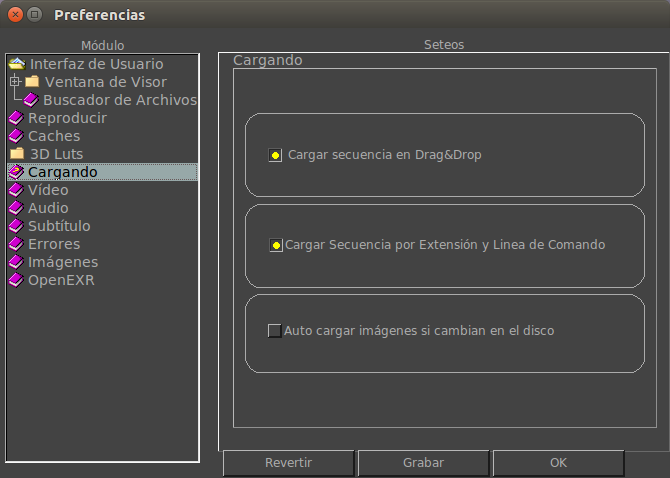

Preferencias de Cargando
La Ficha Preferencias de Cargando te permite configurar como la imagen, video o audio es cargado.
|  |
Con esta opción activada, mrViewer automaticamente cargará la secuencia de imágenes cuando un archivo de la misma sea soltado en la vista principal. Con la opción apagada, solo ese archivo sera cargado.